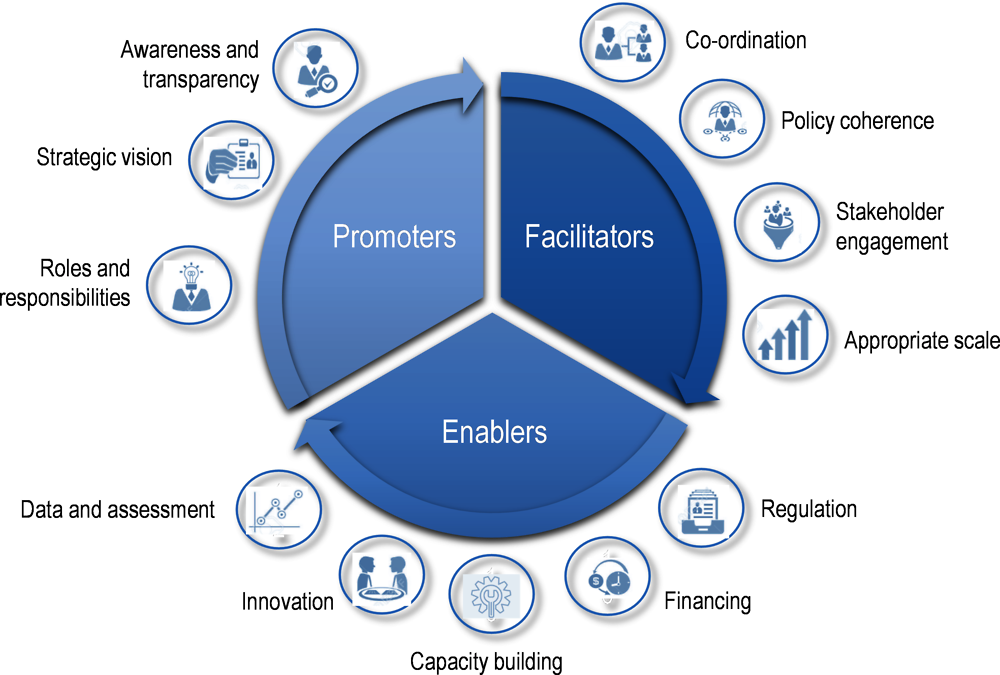

Policy instruments
A range of instruments are available to government actors to help implement CE measures across the UK economy, which can in turn, support of societal objectives
Policy tools
Policy at its broadest refers to a decision by a policy-producing entity to do something or nothing on an issue that has risen to the decisional agenda (Dye 1972, see Policy change). It establishes a course of action implemented through a procedure or protocol to achieve certain objectives and can involve the use of various tools or instruments (British Ecological Society, 2017; HMT, 2022).
Tools or instruments refer to the specific means by which actors exert influence and attempt to drive improvement. Policy tools available to central governments to realise objectives include:
The creation of plans (such as the 25 Year Environment Plan) that outline strategic objectives and strategies (such as the Resources and Waste Strategy or Critical Minerals Strategy) that further detail how these objectives will be met;
The introduction of legislative instruments, including primary legislation (i.e. the main laws passed by legislative bodies of the UK), and secondary legislation (i.e. delegated legislation including Statutory Instruments, Statutory Rules and Orders) made by a person or body under authority contained in primary legislation (Gov.uk);
The ability to distribute and redistribute financial resources across the economy via fiscal and monetary policy and wider economic tools designed to raise revenues but increasingly too incentivise actor behaviour and including taxes, subsidies, grants or public procurement;
Soft tools or non-regulatory options such as voluntary approaches, advice-oriented information-based tools and participatory mechanisms; and
The allocation of organisational/administrative resources to conduct particular activities.
Over the last few decades, instruments employed in the area of the environment in the UK have expanded beyond conventional regulatory instruments such as standards, bans, statutory targets and mandatory permitting procedures to include new environmental policy instruments (NEPIs). NEPIs can be further separated into economic instruments such as taxes, subsidies and public procurement on one hand which seek to harness market dynamics to influence behaviour and soft instruments such as information-disclosure and voluntary agreements on the other, which seek to create boundary conditions to deliver change through influencing knowledge levels and network and governance structures (Evans, 2012; Circle Economy, 2021).
One way to categorise policy instruments is in terms of the level of coercion or regulatory intensity, bindingness and formalisation used in an attempt to bring about change (NAO, 2014; Hepburn, 2016). This continuum is evident across as well as within the different instrument groups outlined below.1 The HMT Green Book2 also recommends appraising groupings of policy options incremental in their ambition. Another is in terms of point of introduction along the value chain.
The ‘OECD Checklist for Action for the Circular Economy’ extends the instruments outlined to further detail the forms of soft influence governments can have, including through promotion and facilitation:

Figure 5. The governance of the circular economy in cities and regions (OECD, )
For instance, the Resources and Waste Provisional Common Framework Framework Outline Agreement and Concordat published in 2022 sets out the UK-wide Resources and Waste Common Framework intended to facilitate multilateral policy development across the UK countries in coordination with one another.
A 2022 OECD review of UK CE policy recommends to “strengthen formal and informal mechanisms for co-ordination, peer learning and policy development among environmental authorities of the four UK nations in setting, implementing and evaluating waste management and circular economy policies.”
Selection criteria
Assessment against critical success factors
We assess key instruments making up the policymakers’ toolkit for delivering a more circular UK economy change against the following set of criteria or ‘Critical Success Factors’ (CSFs) - in the HM Treasury Green Book as ‘attributes essential to the successful delivery of projects and programmes’ (HM Treasury, 2022).
Strategic fit
How policy intervention supports ‘national, regional, local or organisational policies, initiatives and targets’, align with other projects and programmes and fits with wider business strategy of UK public bodies (HM Treasury, 2018). This can differ by application to value driver. For example, choice of instrument can be influenced by marginal damage curves. If very steep to the point of efficient level of pollutant being 0, then prescriptive approaches are most effective. If the MDC is steep but so is the MAC due to the benefits of the environmental use being high, using a quota or quantity-based approach may be more efficient to allow a small amount dedicated to highest benefit uses.
Spillovers
We look for evidence on spillovers, both positive and negative and including: 1) Soft effects such as impacts on attitudes, awareness and learning; 2) Wider economic impacts including on innovation and trade; and 3) Perverse incentives and any contribution to potentially unintended consequences such as negatively impacting competition or giving rise to cross-media impacts.5
Policy mixes
Policy complementarities and tradeoffs
All policy instruments have strengths and weaknesses and differ in their suitability to leveraging different value drivers across different institutional and industrial groups, while none have the ability to address every aspect of developing a more circular economy on their own. While supply-side measures are important to improve circularity, there is also significant room for demand-side measures. This is often the case even for individual product groups (Wrap, 2023).
This implies that policies to support a circular economy are likely to need to be introduced as a mix, levied also at different scales (del Rio and Howlett, 2013; O’Brien and Wilts, 2019). New policies are also not introduced in a vacuum and will interact with existing legislative and regulatory requirements.
“A resource efficiency policy mix may be developed at the sectoral, sub-sectoral or municipal level in order to address a specific challenge or target, in the context of overarching goals” (O’Brien and Wilts, 2019).
At the same time, when developing a policy response, diversity for diversity’s in instrument sake should be avoided (Gunningham and Graborsky 1998; Gunningham 2009). For instance, a 2007 OECD study found a mix of instruments were not always better than a single one for delivering environmental outcomes efficiently.
Where there is a sound basis to introduce policies alongside one another, these will need to be leveraged within a coherent framework across the lifecycle of materials, products and services in addition to the system in which those materials and products operate. Certain instrument mixes may offer greater complementaries than others, such as EPR and taxes, which can be additive in nature. Other examples of complimentary bundles include environmental tax and subsidy reform as well as voluntarism and command and control mechanisms (Gunningham and Sinclair, 1998). Compliance costs in money and time value also need to be kept in mind, with Valpak esimating that the time requirements on firms for reporting under the UK’s plastic packaging tax, EPR and forthcoming deposit return schemes will rise by around 350% compared with current reporting.
Coherence with the wider policy landscape is also key, particularly with those for delivering ‘net zero’ and industrial strategy (OECD, 2022). This can help maximise regulatory efficiency. Complementarities and conflicts between instruments and broader considerations such as performance against critical success factors and alignment with existing domestic cultural, legal, technological and policy arrangements can be considered to ensure policies do not combine to be less than the sum of their parts (Howlett 2004).
Sequencing
The sequence in which instruments are introduced as part of a policy pathway can have implications for aggregate costs and benefits given the potential for interactions. For instance, while certain instruments such as taxes might help reach near-term objectives, technology-push policies might need to be introduced concurrently to bring new technologies to the shelf without which more ambitious long-term objectives may not easily be met (Sandén and Azar, 2005).
Different schools of thought exist on best sequencing approaches. ‘Smart regulation principles’ recommend a responsive approach, whereby instrument choice is escalated from combinations including least interventionist approaches to those which involve a higher degree of coercion based on responsiveness of regulatees (Gunningham, 2009). Marginal abatement cost-curve (MACC) approaches also propose starting with policies with least net cost and expanding these out. Criticisms of MACC-based approaches relate primarily to overlooking temporal interdependence between policies. For instance, Grubb and Wieners (2020) illustrate a slow carbon price ramp approach is likely inefficient in the case when carbon abatement costs are shaped by innovation.
Footnotes
e.g., information-based approaches ranging from mandatory information-reporting requirements by the state (hierarchy); to data-sharing agreements (network); and scraping (less interventionist)↩︎
Which guides Government’s approach to ex ante policy appraisal by setting out steps to systematically compare social costs and benefits of proposals based on the welfare changes they may bring about↩︎
Cost-effectiveness analysis involves a monetary assessment of costs alone while not for benefits.↩︎
Cost-benefit analysis involves measuring net benefits or benefit-cost ratios through both costs and benefits being monetised.↩︎
Such as the IMO’s 2018 Ship Emissions Regulation leading to the installation of equipment helping meet atmospheric emissions regulations but by routing discharge into the ocean.↩︎